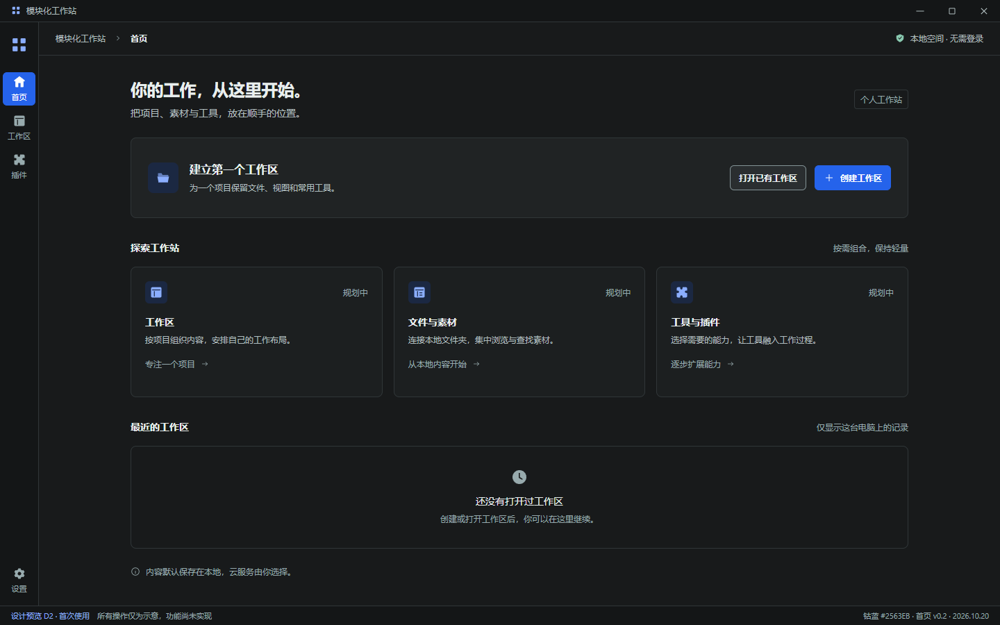
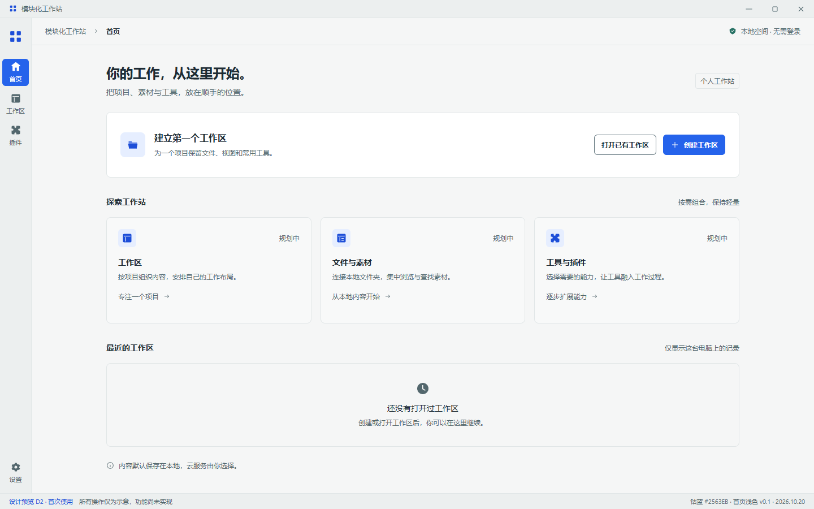
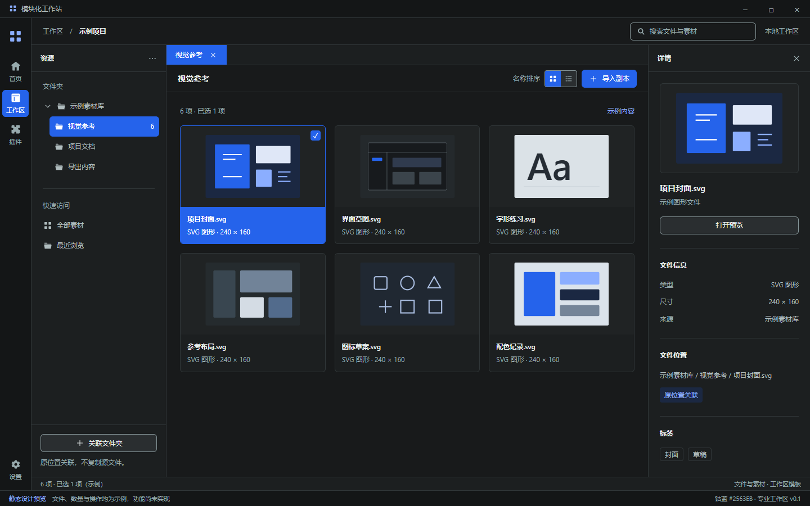
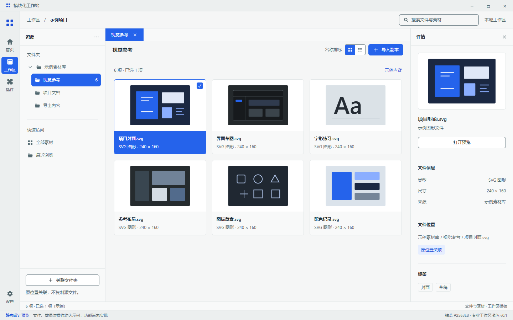
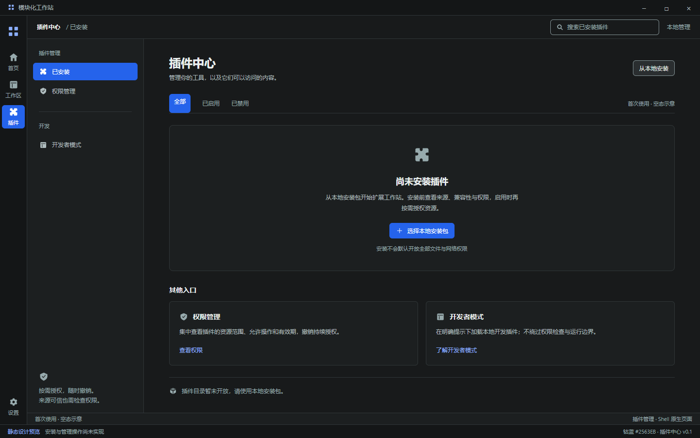
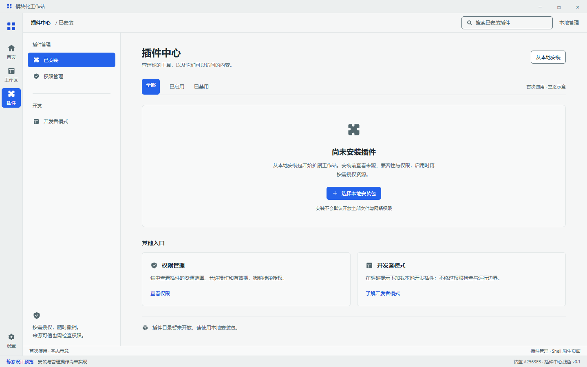

钴蓝 · 深浅主题对照
选择页面并比较两种主题。点击图片可打开完整静态稿；页面中的业务操作尚未实现。
首页


文件与素材


插件中心


当前用于视觉审阅；窗口示意、文件与插件示例均不代表真实业务状态。浅色稿由 D1 配色和对应深色稿生成；应用程序尚未换装。
选择页面并比较两种主题。点击图片可打开完整静态稿；页面中的业务操作尚未实现。






当前用于视觉审阅；窗口示意、文件与插件示例均不代表真实业务状态。浅色稿由 D1 配色和对应深色稿生成；应用程序尚未换装。